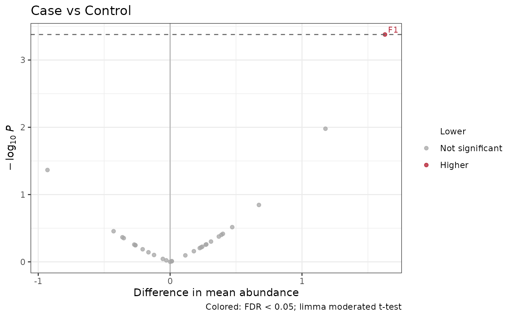

Analyze differential feature abundance with moderated statistics
Source:R/FeatureDifferentialAbundance.R
AnalyzeFeatureDifferentialAbundance.RdFits one linear model per feature with limma and moderates the
feature-wise variances by empirical Bayes, which stabilizes inference in
small samples. Feature abundance is the response:
feature ~ predictor + covariates. This is the feature-neutral engine
shared by the omics packages (proteins, metabolites, and similar wide
feature matrices).
Usage
AnalyzeFeatureDifferentialAbundance(
data,
variables,
predictor_var,
covariates = NULL,
contrasts = NULL,
reference = NULL,
block_var = NULL,
trend = FALSE,
robust = FALSE,
adjust_method = "BH",
alpha = 0.05,
min_samples = 3,
feature_label = "feature"
)Arguments
- data
A wide data frame with samples in rows, containing the feature columns, the predictor, and optional covariates. Abundances should be on a log (or otherwise approximately normal) scale.
- variables
Character vector of numeric feature columns.
- predictor_var
Character. Group column (character, factor, or logical) or a numeric column. Groups are compared pairwise; a numeric predictor gives the change in abundance per unit.
- covariates
Optional character vector of adjustment columns.
- contrasts
Optional group comparisons, as a list of length-two character vectors
c(numerator, denominator); for examplelist(c("Case", "Control"))estimates Case minus Control. Defaults to every other group versusreference. Ignored for a numeric predictor.- reference
Reference group for the default contrasts. Defaults to the first factor level.
- block_var
Optional column identifying repeated or paired samples from the same participant. The within-participant correlation is estimated with
limma::duplicateCorrelation()(requires thestatmodpackage).- trend
Logical. Allow the prior variance to depend on mean abundance (
limma::eBayes(trend = TRUE)).- robust
Logical. Make the variance moderation robust to outlier features (
limma::eBayes(robust = TRUE)).- adjust_method
P-value adjustment method, applied across features within each contrast.
- alpha
Significance threshold for
Significant(P-value) andFDRSignificant.- min_samples
Minimum non-missing samples required to test a feature.
- feature_label
Singular noun used in the methods text and plot labels, such as
"protein"or"metabolite".
Value
A feature_differential_abundance object with:
ResultsTableOne row per contrast and feature:
Contrast,Variable,Effect/Estimate(difference in mean abundance, or slope),EffectType,ConfLow,ConfHigh,StdError,TStatistic,PValue,FDR,AveAbundance,N,Significant,FDRSignificant, andDirection.SampleAuditSamples supplied, dropped for an incomplete design, and analyzed.
ExcludedFeaturesFeatures not tested, with the reason.
Design,FitThe design matrix and the
limmafit.MetadataSettings used, contrast names, group sizes, the within-block correlation, and a
Methodssentence.
Details
Samples missing the predictor, a covariate, or the block are
dropped and counted in SampleAudit. Missing feature values are handled
per feature.
Examples
if (requireNamespace("limma", quietly = TRUE)) {
set.seed(1)
df_wide <- data.frame(
Group = rep(c("Control", "Case"), each = 10),
Age = round(runif(20, 30, 70)),
matrix(rnorm(20 * 30), nrow = 20, dimnames = list(NULL, paste0("F", 1:30)))
)
df_wide$F1 <- df_wide$F1 + 2 * (df_wide$Group == "Case")
da <- AnalyzeFeatureDifferentialAbundance(
df_wide, paste0("F", 1:30), "Group",
covariates = "Age", reference = "Control"
)
da
PlotFeatureDifferentialAbundance(da)
}
